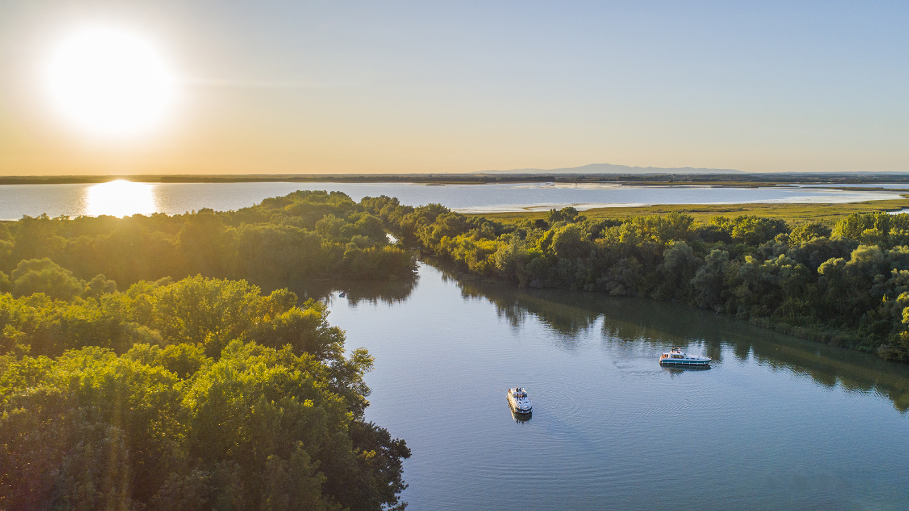

Balaton
A Balaton Közép-Európa legnagyobb tava, amelyet a "magyar tengerként" is emlegetnek. Népszerű turisztikai célpont.

Ismerd meg Magyarország legszebb tavainak és folyóinak világát, és fedezd fel a vízi élővilág csodáit!
A Balaton Közép-Európa legnagyobb tava, amelyet a "magyar tengerként" is emlegetnek. Népszerű turisztikai célpont.
A Duna Magyarország fő folyója, amely több országon átível, és számos kulturális és történelmi jelentőséggel bír.

A Tisza Magyarország második legnagyobb folyója, amely különleges élővilágával és nyugodt partjaival ismert.
A Velencei-tó Magyarország egyik legmelegebb tava, amely ideális a nyári fürdőzéshez és a vízi sportokhoz.